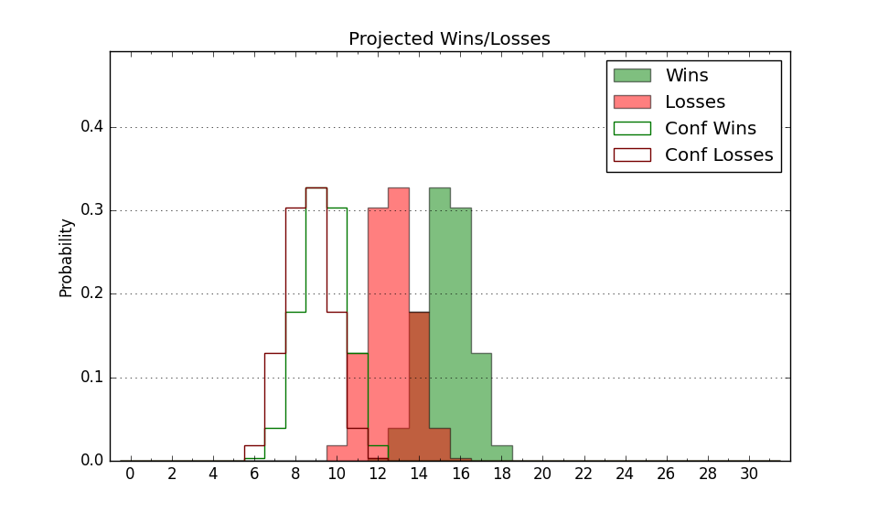

| Home | Game Probabilities | Conferences | Preseason Predictions | Odds Charts | NCAA Tournament |
| City: | Arlington, Texas | |
| Conference: | Western (4th)
| |
| Record: | 6-6 (Conf) 12-10 (Overall) | |
| Ratings: | Comp.: 2.5 (142nd) Net: 2.8 (141st) Off: 104.5 (251st) Def: 101.7 (62nd) SoR: 0.0 (105th) |
| Remaining | ||||||
|---|---|---|---|---|---|---|
| Date | Opponent | Win Prob | Pred. | |||
| 2/14 | Southern Utah (293) | 89.0% | W 78-64 | |||
| 2/19 | Utah Tech (164) | 70.1% | W 72-66 | |||
| 2/21 | Utah Valley (84) | 45.6% | L 69-70 | |||
| 2/26 | @ California Baptist (114) | 27.7% | L 61-68 | |||
| 3/5 | @ Tarleton St. (196) | 47.4% | L 69-70 | |||
| 3/7 | @ Abilene Christian (236) | 57.9% | W 66-64 | |||
| Previous | Game Score | |||||
| Date | Opponent | Win Prob | Result | Off | Def | Net |
| 11/8 | @New Mexico (45) | 10.3% | L 56-74 | -14.2 | 13.1 | -1.1 |
| 11/15 | Missouri St. (201) | 75.9% | W 67-49 | -10.7 | 29.4 | 18.7 |
| 11/18 | @Evansville (282) | 68.0% | W 84-76 | 21.8 | -14.0 | 7.9 |
| 11/21 | (N) Campbell (207) | 64.2% | L 67-71 | -16.0 | 6.3 | -9.7 |
| 11/22 | @Weber St. (170) | 41.9% | W 74-73 | 3.9 | -2.0 | 1.9 |
| 11/29 | Stephen F. Austin (86) | 46.5% | W 66-61 | 2.1 | 9.3 | 11.4 |
| 12/2 | @Arkansas St. (143) | 35.2% | L 63-83 | -11.3 | -7.2 | -18.5 |
| 12/11 | @UT Rio Grande Valley (123) | 29.7% | W 58-50 | 4.4 | 20.0 | 24.3 |
| 12/17 | @Stanford (71) | 16.3% | L 60-76 | -4.9 | -0.7 | -5.5 |
| 12/22 | @Oral Roberts (316) | 77.5% | W 69-57 | -1.8 | 12.0 | 10.2 |
| 12/29 | Tarleton St. (196) | 75.4% | L 63-69 | -9.8 | -12.4 | -22.2 |
| 1/1 | California Baptist (114) | 56.6% | W 63-51 | -1.4 | 17.8 | 16.4 |
| 1/3 | @Southern Utah (293) | 70.4% | W 86-77 | 14.4 | -7.2 | 7.2 |
| 1/10 | Abilene Christian (236) | 82.4% | W 82-72 | 18.0 | -21.3 | -3.3 |
| 1/15 | @Utah Tech (164) | 40.8% | W 56-52 | -20.2 | 29.5 | 9.3 |
| 1/17 | @Utah Valley (84) | 19.8% | L 74-86 | 12.6 | -16.2 | -3.6 |
| 1/21 | Tarleton St. (196) | 75.4% | W 71-64 | 4.0 | 1.3 | 5.3 |
| 1/29 | Southern Utah (293) | 89.0% | W 80-61 | 5.3 | 6.3 | 11.6 |
| 1/31 | California Baptist (114) | 56.6% | L 77-87 | -2.8 | -16.2 | -19.0 |
| 2/5 | @Utah Tech (164) | 40.8% | L 84-87 | 5.6 | -11.9 | -6.2 |
| 2/7 | @Utah Valley (84) | 19.8% | L 60-81 | 7.4 | -30.7 | -23.4 |
| 2/12 | @Abilene Christian (236) | 57.9% | L 63-67 | -5.2 | -3.0 | -8.3 |
| Stats & Trends | |||||
|---|---|---|---|---|---|
| Current | Day | Week | Month | Season | |
| Composite | 2.5 | -0.2 | -0.4 | -0.8 | +9.3 |
| Comp Rank | 142 | -- | -2 | -10 | +64 |
| Net Efficiency | 2.8 | -0.3 | -0.6 | -2.4 | -- |
| Net Rank | 141 | -1 | -9 | -15 | -- |
| Off Efficiency | 104.5 | -0.3 | +0.5 | +0.3 | -- |
| Off Rank | 251 | -6 | -1 | -16 | -- |
| Def Efficiency | 101.7 | -0.1 | -1.1 | -2.8 | -- |
| Def Rank | 62 | -- | -7 | -16 | -- |
| SoS Rank | 129 | +1 | +29 | +35 | -- |
| Exp. Wins | 15.4 | -0.7 | -1.0 | -1.4 | +1.5 |
| Exp. Conf Wins | 9.4 | -0.7 | -1.0 | -1.4 | +0.7 |
| Conf Champ Prob | 0.8 | -2.1 | -6.2 | -16.8 | -10.8 |

| Advanced Stats | ||
|---|---|---|
| Stat | Value | Rank |
| Off Eff FG % | 0.484 | 272 |
| Off Ast Ratio | 0.134 | 264 |
| Off ORB% | 0.356 | 51 |
| Off TO Rate | 0.173 | 333 |
| Off FT Ratio | 0.389 | 106 |
| Def Eff FG % | 0.481 | 66 |
| Def Ast Ratio | 0.138 | 101 |
| Def ORB% | 0.268 | 61 |
| Def TO Rate | 0.148 | 173 |
| Def FT Ratio | 0.445 | 332 |